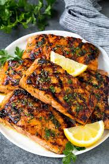

Kiri's Kitchen
Kiri is a 34-year-old restaurant owner from San Francisco. She owns a small family restaurant that serves a mix of traditional and modern American cuisine. The restaurant is known for its cozy atmosphere and delicious food.
Introduction
Kiri's Kitchen is a cozy family-owned restaurant nestled in the heart of San Francisco. Established in 2015, it has been serving a fusion of traditional and modern American cuisines, providing a warm, welcoming ambiance that mirrors the comfort found in a family kitchen. The restaurant values fresh, locally sourced ingredients, community engagement, and providing a delightful dining experience that goes beyond just the meal. Kiri believes in creating a place where every diner feels at home while enjoying hearty, delicious meals.
Customer Favorites
Appetizers
Vegetable Spring Rolls
The Vegetable Spring Rolls are crispy rolls that are filled with fresh veggies and served with a sweet chili dip ($6.95)
Clam Chowder Soup
The Clam Chowder Soup is a creamy New England-style chowder that is rich with clams and potatoes($7.95)
Main Courses
Grilled Salmon

The Grilled Salmon is a fan favorite with the freshly grilled salmon being served with a lemon-butter sauce, seasonal vegetables, and mashed potatoes ($18.95)
Classic Cheeseburger

It is hard to pass up the Classic Cheeseburger though with its juicy beef patty served with cheddar cheese, lettuce, tomatoes, and house sauce. Don’t forget the side of fries! ($14.95)
Desserts
The most popular desserts!
Apple Pie

The Apple Pie is a traditional apple pie topped with a scoop of vanilla ice cream and drizzled with caramel sauce ($6.95)
Chocolate Lava Cake
The Chocolate Lava Cake is to die for as it is served warm with a molten center and a dollop of whipped cream on top ($7.95)
Drinks
The House Blend Coffee is a rich and smooth coffee blend that is freshly brewed when ordered ($3.50)
Mint Lemonade
The Mint Lemonade is a refreshing take on lemonade with a hint of mint ($4.50)
Specialties
- Weekly Specials

Every Monday is Pasta Night at Kiri’s Kitchen where you can enjoy any pasta dish at a $2 discount.
Seasonal Menu
- Winter
Available in the Winter is the Winter Squash Soup, a creamy squash soup topped with roasted pumpkin seeds ($7.95)
- Summer
Available in the Summer is the Summer Berry Salad which includes mixed greens with fresh berries, goat cheese and a raspberry vinaigrette ($10.95)
Reviews
Sara L left a 5-star review and said "The atmosphere is so warm and inviting, and the food is absolutely delicious! The grilled salmon is a must-try!"
Mike D left a 4-star review and remarked, "I love the variety in the menu. The seasonal specials keep me coming back. Kiri's Kitchen has become our weekly dining spot."
Emma R left a 5-star review and attested, "The apple pie is the best I've ever had. It's the perfect blend of sweet and tart, and the crust is just right. A cozy place with friendly staff!"
Info
The restaurant’s contact information, location, and operating hours:
Phone number: (415) 555 - 1234 / Address: 123 Cozy Lane, San Francisco, CA 94102 / Open Mon-Sun 11:00 AM - 10:00 PM